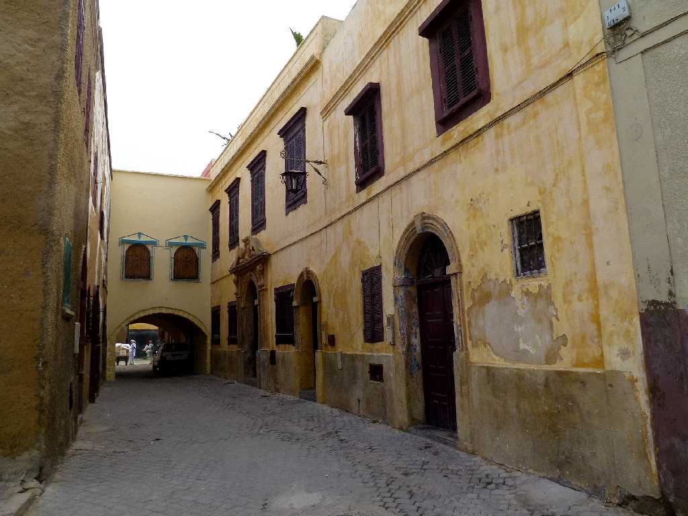
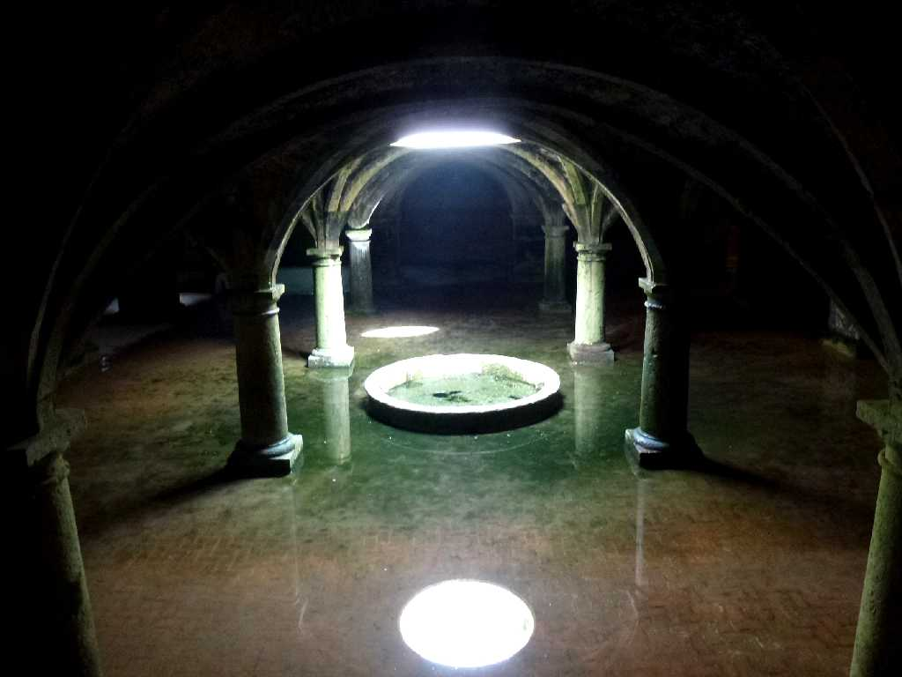
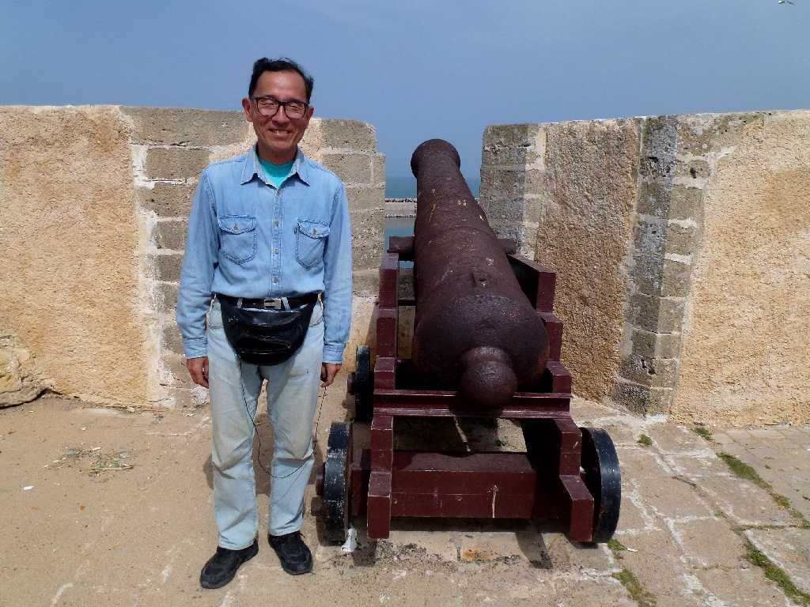

Portuguese City El Jadida
１６世紀にポルトガルが交通の要所として要塞を築き栄えた街でポルトガル風の街並みが美しいアルジャディーダ旧市街

Portuguese Cistern El Jadida
１５１４年ポルトガル時代に造られた５０ｍ四方の雨水を貯めるゴシック様式の貯水槽が残っている

March 18 2014 El Jadida
１５０２年インド航路の中継基地として３００ｍ四方の要塞都市を築いたが１７６９年モロッコにより占領され再建された新しい街を意味する El Jadida と名付けられた ポルトガル時代の旧名 Mazagan